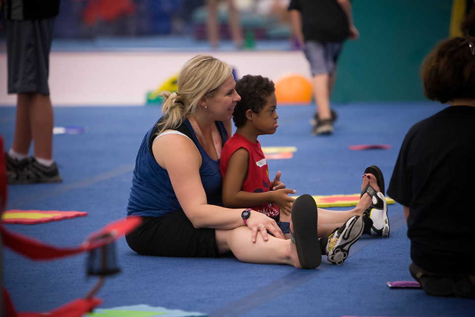

Come grow with us!
Adaptive Gymnastics is a free gymnastics class for kids with special needs. Each child in the class is paired with one volunteer who will help the kid go through all of the activities. This includes being a cheerleader next to the kids (they love the attention) or more hands on help for multiple reasons (cognitive delay, physical disability, lack of hearing).
Each class ends in the foam pit, which the children LOVE. It is almost a glorified play time.
Volunteers do not need to have a background in gymnastics or special needs in order to help out! A 30 minute training session is provided before the class, and help is given throughout the class as necessary! Classes are run on Saturdays and Sundays, and volunteers would not have to commit to every week. In addition, there is a carpool to the location, so transportation should not be an issue.

Hours: Saturday. 4:45-8:15, Sunday. 4:45-8:15pm
Adress: Hartland Sports Center, 2755 Arena Dr, Hartland, MI 48353